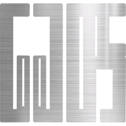

နီꩻ
နားရီႏ
မိနစ်
စက္ကန့်
Album ယိုနဝ်ထွာဒျားနီသွဉ်သီး DOPE အရီးသွတ်ခွေႏသွူနယ်ဩ။
မိဉ်ႏတွိုးဝါဆိုလာဆန် ၁၀ နီနဝ် အီထန်လွဉ်နဝ်မ မဲ့ဒင်းလွေဖေး Spotify, Apple Music, iTunes, SoundCloud, Facebook တွမ်း Youtube လောင်းဖုံးဩ။
DOPE
(We will bring the new vibes)